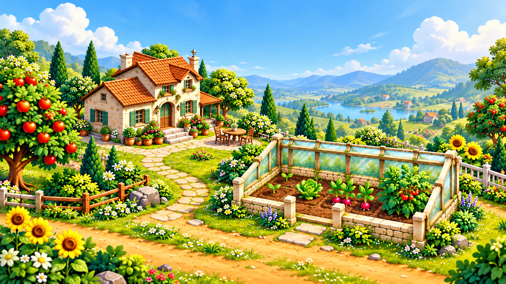

Pequeños comienzos, grandes brotes.
Decide qué cultivar en tus invernaderos, desde tus primeros rábanos hasta nuevas variedades de rincones lejanos del valle.

TE DAMOS LA BIENVENIDA A GREENHOUSE VALLEY
Planta, cuida y cosecha. Amplía tus invernaderos y descubre lo que te espera al otro lado del próximo puente.
Explora el valleCULTIVA. EXPLORA. SIÉNTETE EN CASA.
Tu primer invernadero es solo el comienzo.
En Greenhouse Valley, un pequeño comienzo se convierte poco a poco en tu propio refugio verde. Elige semillas, cuida tus plantas y recoge tu cosecha. Cada nueva región abre otra parte del mundo.
Desde jardines en flor hasta lagos tranquilos, cada región tiene su propio ambiente y nuevas plantas.
Decide qué cultivar en tus invernaderos, desde tus primeros rábanos hasta nuevas variedades de rincones lejanos del valle.
Riega tus plantas, acompaña su crecimiento y equipa tus invernaderos con útiles sistemas automáticos.
Vende tu cosecha, desbloquea nuevas regiones y encuentra más lugares para tus invernaderos.
UN MUNDO QUE CRECE CONTIGO
Desde tu primer invernadero hasta el molino de agua y la esclusa: descubre tres lugares de Greenhouse Valley.
01 / ZONA INICIAL
Tu vida en el valle comienza junto a la granja. Planta tus primeras semillas, cuida los bancales y recoge lo que crece en tus invernaderos.
Rábanos y lechugas
DEL PRIMER JARDÍN A LO DESCONOCIDO
Desde paisajes verdes hasta cumbres heladas y lugares misteriosos: descubre poco a poco nuevas regiones y sus plantas.
Tu comienzo entre el verde · Rábanos y lechugas
Colinas soleadas y bosques · Girasoles, tomates y más
En las alturas · Arándanos, arándanos rojos y col rizada de invierno
Agua y huertos · Arroz, taro, manzanas y peras
Un rincón misterioso · Moonflower y Glowroot
Estamos trabajando en Greenhouse Valley. Aquí ya puedes echar un vistazo al mundo que está tomando forma. La información de lanzamiento y los enlaces de descarga llegarán cuando sea el momento.
Un juego de Copperwing GamesINFORMACIÓN ÚTIL
Un juego de invernaderos, plantas y exploración de un mundo conectado. Planta semillas, cuida tus cultivos y desbloquea nuevas regiones poco a poco.
Greenhouse Valley está en desarrollo. Todavía no hay una descarga pública ni una fecha de lanzamiento confirmada. Encontrarás la información aquí en cuanto esté disponible.
La imagen de cabecera procede de la pantalla de carga del juego. Las tres imágenes de las regiones muestran el juego con su interfaz e invernaderos: la zona inicial, el molino y la esclusa. Todas son imágenes del desarrollo y pueden cambiar.
Jardines en flor, lagos, bosques, praderas, viñedos, huertos y mucho más. Las nuevas regiones traen nuevas plantas, más lugares para tus invernaderos y nuevas mecánicas de juego. Cada región que desbloquees ofrece nuevas posibilidades para explorar.